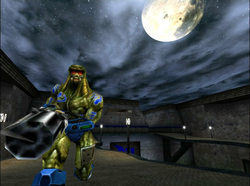

Unreal Tournament Reihe
|  |  | |
UT99 © Epic Games  | UT04 © Epic Games | UT3 © Epic Games |
Nach dem großen Erfolg von Unreal entstand bei den Machern die Idee eines reinen Multiplayer-Spiels im selben Universum. Die Unreal Tournament® Reihe ist dementsprechend eine Serie von Ego-Shootern, die das Hauptaugenmerk auf Netzwerk- bzw. Online-Spiele legen. Der Einzelspieler-Modus ist bei den ersten drei Teilen eher ein netter Zusatz, in dem der Spieler als eine Art Gladiator ein Turnier gewinnen muss. Erst ab dem vierten Teil gibt es eine richtige Einzelspieler-Kampagne. Allen Teilen gemeinsam ist eine sehr aktive Mod-Community, die die Spiele immer mit neuen Inhalten aktuell gehalten haben.
Leider hat der Entwickler Epic Games hierbei ein Namenswirrwarr geschaffen. Hier alle Teile in chronologischer Reihenfolge:
UT99:Unreal Tournament (kurz UT bzw. in Analogie zu den beiden nachfolgenden Teilen UT99 oder UT1)
Der erste Teil erfreut sich trotz seines hohen Alters immer noch einiger Beliebtheit.
Der zweite Teil UT2003 kam bei vielen Fans nicht besonders gut an. Vor allem wurde kritisiert, dass sich das Spielgefühl zu sehr vom ersten Teil unterscheide.
Unreal Tournament 2004 (kurz UT04 oder UT2k4)
Mit dem dritten Teil konnte Epic die Fans wieder versöhnen. Als besondere Neuerung wurden in diesem Teil erstmals Fahrzeuge und ein neuer, Battlefield ähnlicher Spielmodus namens Onslaught integriert
Unreal Tournament 3
Der vierte Teil der Spielereihe läuft leider nicht nativ unter Linux, daher muss man auf Wine zurückgreifen. Es gibt eine richtige Einzelspieler-Kampagne mit eigener Story.
Die verwirrende Tatsache, dass der eigentlich vierte Teil mit drei beziffert wird, liegt laut Epic daran, dass UT03 und 04 eher wie ein Spiel mit verschiedenen Entwicklungsstufen sei. Deshalb hätten sich die beiden Teile auch nur marginal voneinander unterschieden. Außerdem werde durch den Titel besser deutlich, dass die neue Unreal Engine 3 verwendet wird.

- Erstellt mit Inyoka
-
 2004 – 2017 ubuntuusers.de • Einige Rechte vorbehalten
2004 – 2017 ubuntuusers.de • Einige Rechte vorbehalten
Lizenz • Kontakt • Datenschutz • Impressum • Serverstatus -
Serverhousing gespendet von